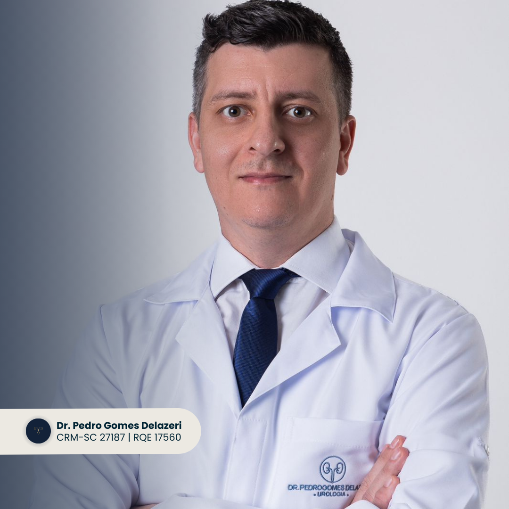
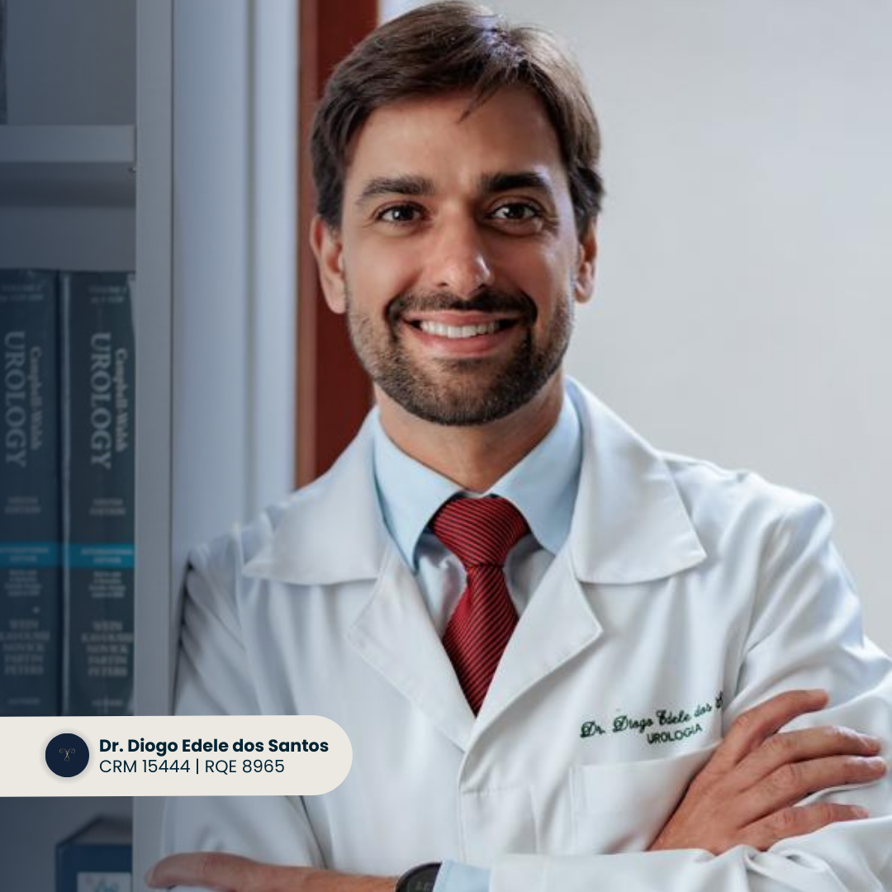
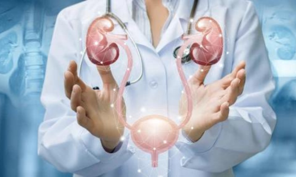
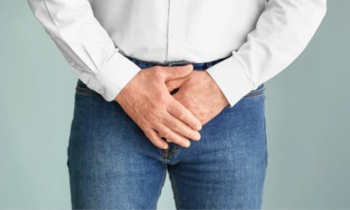
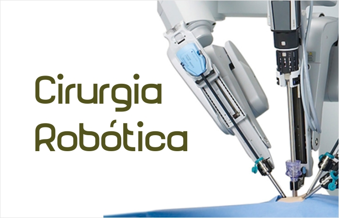
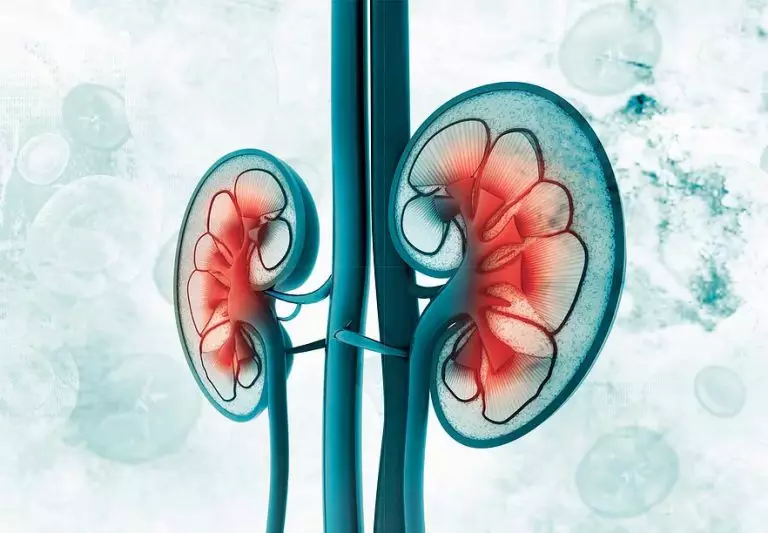

Missão
Nossa missão na UROKLINIK é proporcionar atendimento urológico de alta qualidade, com foco na saúde e bem-estar de nossos pacientes. Nos dedicamos a oferecer diagnósticos precisos, tratamentos eficazes e um cuidado humanizado, utilizando tecnologias avançadas
e práticas baseadas em evidências científicas.
Estamos comprometidos em promover a prevenção e a educação em saúde, contribuindo para uma melhor qualidade de vida na cidade de Brusque e região.
Visão
Ser reconhecida como a clínica de referência em urologia na cidade de Brusque e região, destacando-se pela excelência no atendimento, inovação tecnológica e resultados clínicos superiores. Almejamos criar um ambiente de confiança e respeito, onde pacientes se sintam acolhidos e seguros. Aspiramos a liderar iniciativas de saúde preventiva e a expandir continuamente nossos serviços, sempre buscando a melhoria contínua e a satisfação plena de nossos pacientes.
Conheça os Doutores
Sou o Dr. Pedro Gomes Delazeri e acredito que a medicina vai além da ciência.
É preciso criar um vínculo de confiança e proximidade com cada paciente, tornando a doença mais leve e a medicina mais acolhedora.
Desde que me formei médico, há mais de 12 anos, sempre busquei aliar meu conhecimento técnico atualizado com a empatia e a compreensão necessárias para fazer de cada atendimento um momento mais agradável.

Conheça o Dr. Diogo Edele dos Santos:
Natural de Porto Alegre, formou-se em Medicina pela Faculdade Federal de Ciências da Saúde de Porto Alegre em 2005, passando a especializar-se em Cirurgia Geral e Urologia no renomado Complexo Hospitalar
Santa Casa.
Atua em Brusque desde 2011 na rede pública e privada, nas áreas clínicas e cirúrgicas da Urologia, e na área da educação como professor da faculdade de Medicina da UNIFEBE. Recentemente obteve o título de Mestre em Ciências
da Saúde pela UNESC. Considerado pioneiro na cidade em técnicas avançadas como a cirurgia de câncer de próstata por videolaparoscopia e robótica.
Casado e pai de dois meninos, gosta de tocar violão, praticar corrida de rua e assistir
a esportes de todas as modalidades.
Após dois anos de convívio com o Dr. Pedro, surgiu a oportunidade de fundar a UROKLINIK em maio de 2024. Para o Dr. Diogo, a UROKLINIK não é apenas um serviço médico, mas a realização de um sonho
compartilhado de oferecer cuidado integral e individualizado às pessoas, com respeito e ética.
Áreas de atuação
Tratamento dos rins, ureteres, bexiga e uretra
O sistema urinário é formado pelos rins, ureteres, bexiga, e uretra, sendo responsável pela formação, armazenamento e eliminação da urina. O urologista é o médico responsável pelo tratamento clínico e cirúrgico dos diversos distúrbios do aparelho urinário, tanto em homens como em mulheres e crianças.
- Câncer de rim e bexiga
- Incontinência urinária
- Cálculos urinários (pedras nos rins)
- Cistos renais
- Infecções urinárias
- Estenose de uretra
Andrologia
A andrologia é a área da urologia responsável pela saúde sexual e reprodutiva do homem.
- Impotência sexual
- Infertilidade masculina
- Infecções Sexualmente transmissíveis (ISTs)
- Distúrbios ejaculatórios
- Cirurgia de Varicocele
- Vasectomia
Cirurgia minimamente invasiva
Robótica ou laparoscópica

- Prostatectomia Radical
- Prostatectomia Simples
- Nefrectomia Parcial
- Nefrectomia Radical
- Linfadenectomia Pélvica
- Cistectomia Parcial ou Radical
- Pieloplastia
- Reimplante Uretral
- Ureteroplastia (Megaureter)
- Tratamento de Cistos Renais
- Promontofixação de Prolapsos Vaginais
Uro-Oncologia
- Câncer de Próstata
- Câncer de Bexiga
- Câncer de Rim
- Câncer de Ureter
- Câncer de Pênis
- Câncer de Testículo